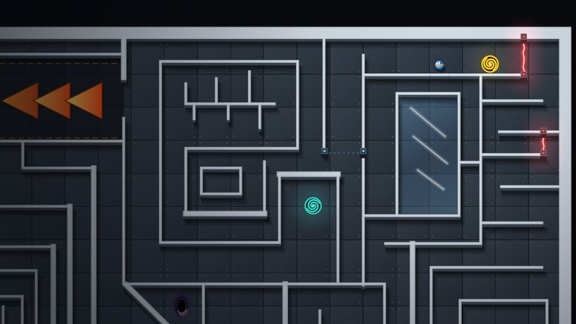
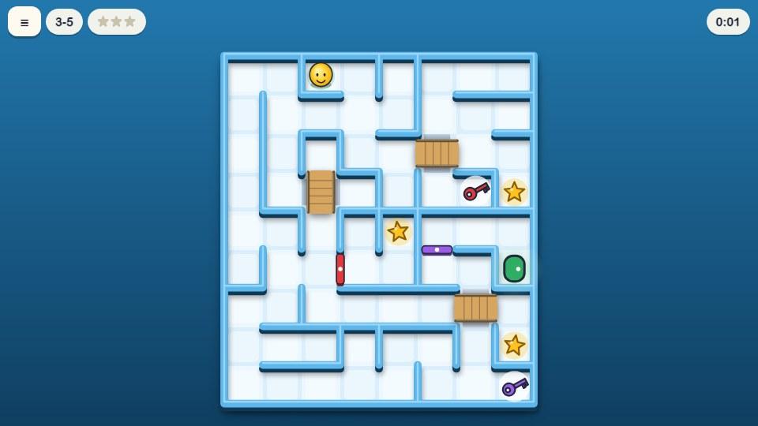
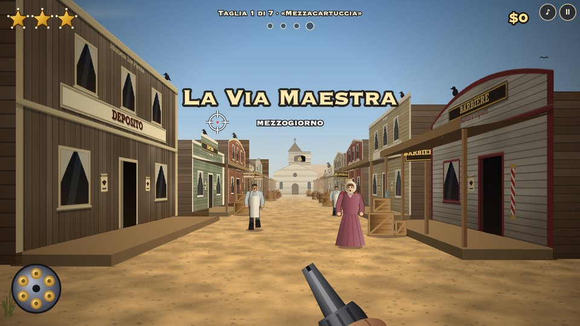
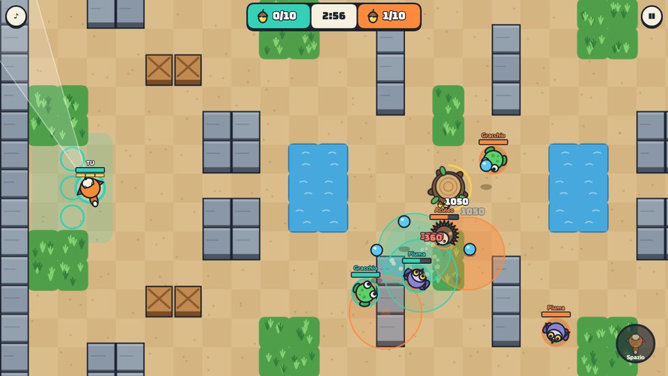
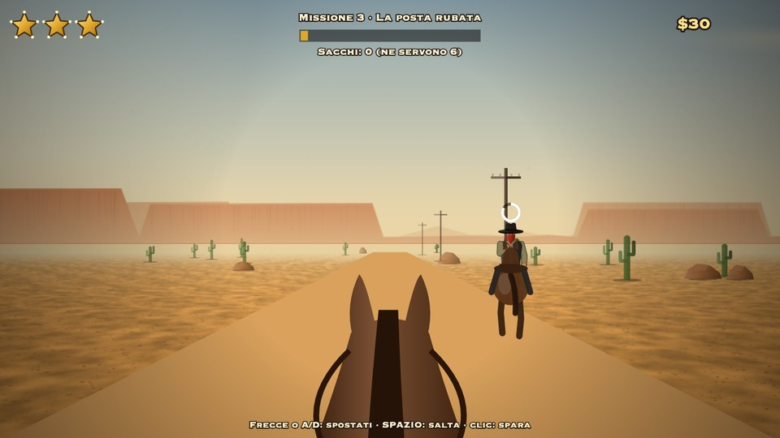
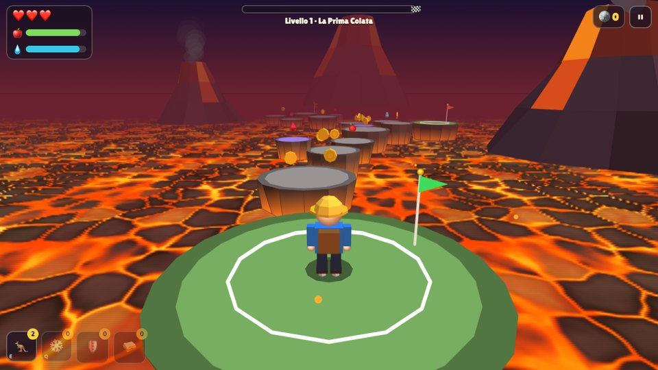
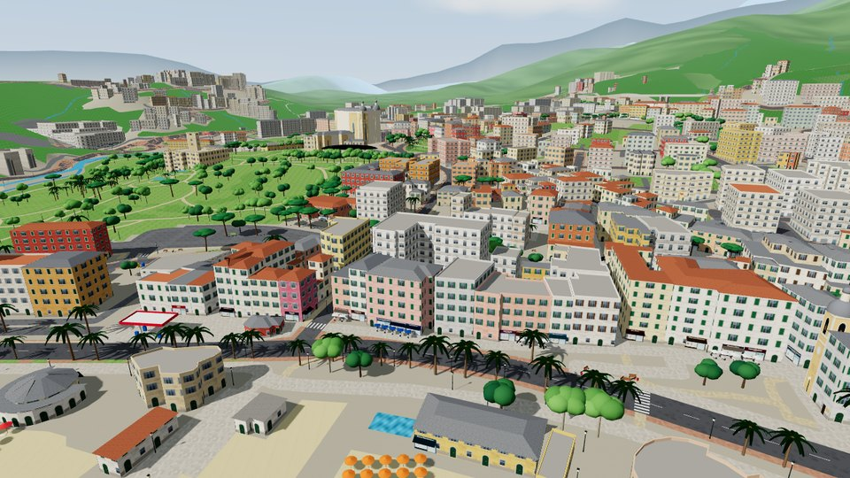
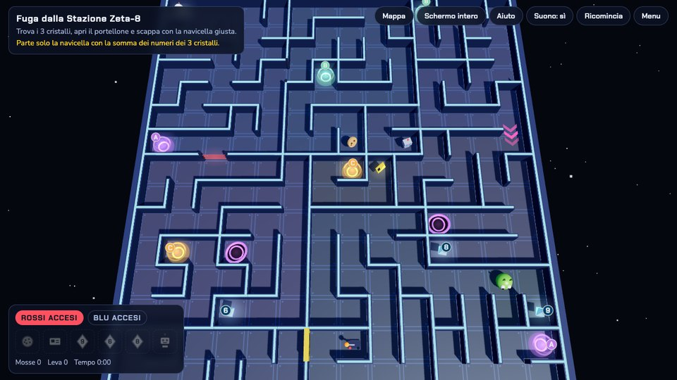
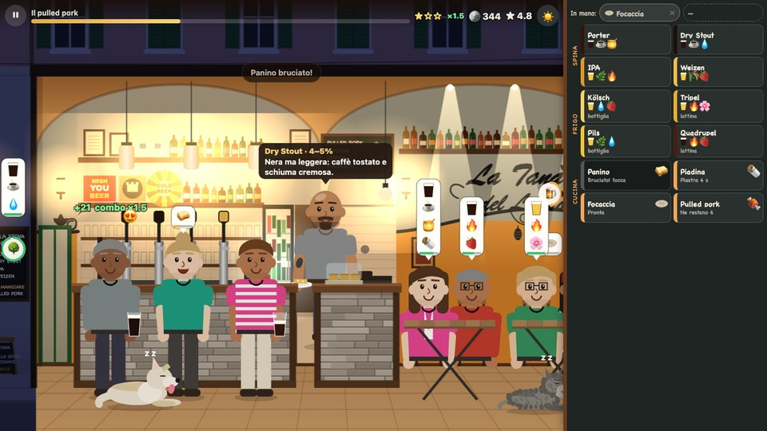

Giochi fatti in casa. Gratis, senza account.
Tocca un gioco e parti: funzionano sul telefono, sul tablet e sul computer.
Continua a giocare
Tutti i giochi

RompicapoIl Labirinto dei LaserUn labirinto disegnato a penna, diventato videogioco.1 giocatoreDa 7 anni
RompicapoSbuca!42 labirinti, dal più facile al più intricato.1 giocatoreDa 6 anni
MiraSette TaglieSei il nuovo sceriffo: sette ricercati, sette duelli.1-2 giocatoriDa 9 anni
AzioneZuffa in CortileTre contro tre per le ghiande d'oro della quercia.1 giocatoreDa 7 anni
MiraL’Ottava TagliaIl seguito di Sette Taglie: un viaggio a missioni nel West.1 giocatoreDa 8 anni
Salti e abilitàOcchio alla Lava!Il pavimento è lava: salta di roccia in roccia.1 giocatoreDa 6 anni
Mondo apertoArenzano: Liberi TuttiIl centro vero di Arenzano in 3D, da girare in libertà.1 giocatoreDa 12 anni
RompicapoLabirinti SpazialiQuattro labirinti-rompicapo, da risolvere con la testa.1 giocatoreDa 7 anni
AzioneTana del Luppolo GameDietro al bancone con Roberto, in Darsena a Savona: la birra giusta per ogni cliente.1 giocatoreDa 8 anniQui non c'è ancora niente. Prova un altro tipo di gioco.